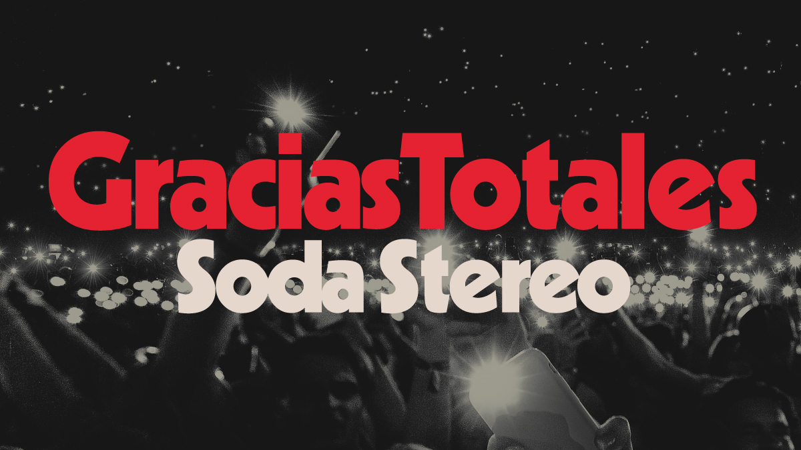

ULTIMAS NOTICIAS SOBRE SODA STEREO
Luego de una gira por América Latina y los Estados Unidos y dos presentaciones en el Campo
Argentino
de Polo, el show “Gracias Totales - Soda Stereo” llega al Movistar Arena. La cita es el próximo
17
de mayo y este lunes 25 de abril se dio por comenzada la venta general de entradas.
De esta forma, Charly Alberti y Zeta Bosio retoman el elogiado espectáculo multimedia que
presenta
las canciones de Soda Stereo con Gustavo Cerati en las pantallas y con diversos cantantes
invitados,
algunos en vivo y otros como parte de la puesta visual y sonora que capta la esencia del trío
que
conquistó el continente. La banda que acompañará al baterista y al bajista estará nuevamente
integrada por Richard Coleman en guitarras, Fabián “Zorrito” Quintiero en teclados, Roly Ureta y
Simón Bosio en guitarras.

DISCOS DE PLATINO Y ORO
Soda Stereo, el legendario grupo argentino de rock recientemente recibió
Discos de Oro y Platino,
certificados por la RIAA por sus ventas en Estados Unidos y Puerto Rico.
Esta presentación se llevó a cabo el 27 de febrero durante su concierto en el FTX Arena de
Miami. El
grupo recibió los galardones de manos de Afo Verde, Director General y CEO de Sony Music
Latin-Iberia. Los integrantes del grupo Charly Alberti y Zeta Bosio aceptaron estos
reconocimientos,
los cuales también serán entregados a la familia de Gustavo Cerati.
Los discos premiados son: “Sueño Stereo” (1995), su último álbum de estudio, Oro; su álbum
“Comfort
y Música Para Volar”, "MTV Unplugged" (1996), Platino y Oro; “El Último Concierto” (1997) discos
A y
B, Oro.

Héctor Pedro Juan Bosio
San Fernando, 1 de octubre de 1958, más conocido como Zeta Bosio, es un
músico de rock, productor discográfico y DJ argentino. Fue el bajista de la mítica e influyente
banda de rock en español Soda Stereo, debido a esto, es considerado uno de los músicos más
importantes de rock latino y en español, junto con sus ex-compañeros de banda Gustavo Cerati y
Charly Alberti. Entre fines de 2013 y abril de 2014 fue el bajista de la banda chilena La Ley.1
Actualmente es miembro, líder y figura de la banda Shoot The Radio, banda que fundó en 2015 junto a
Fernando Montemuro.
Gustavo Adrián Cerati
Barracas, Buenos Aires, 11 de agosto de 1959-Núñez, 4 de septiembre de 2014
fue un músico, cantautor y productor discográfico argentino que obtuvo reconocimiento internacional
por haber sido el líder, vocalista, compositor y guitarrista de la banda de rock Soda Stereo. Parte
de la prensa especializada y músicos lo consideran como uno de los artistas más influyentes del rock
latinoamericano.
Carlos Alberto Ficicchia
Buenos Aires, 27 de marzo de 1963, más conocido como Charly Alberti, es un
músico de rock argentino, hijo del baterista de jazz y música caribeña Tito Alberti. Fue baterista
de la banda de rock Soda Stereo y es líder y baterista del grupo musical Mole. Actualmente, es
activista de la protección del medio ambiente, embajador ONU y fundador del grupo ambientalista R21
para una Latinoamérica Sustentable.